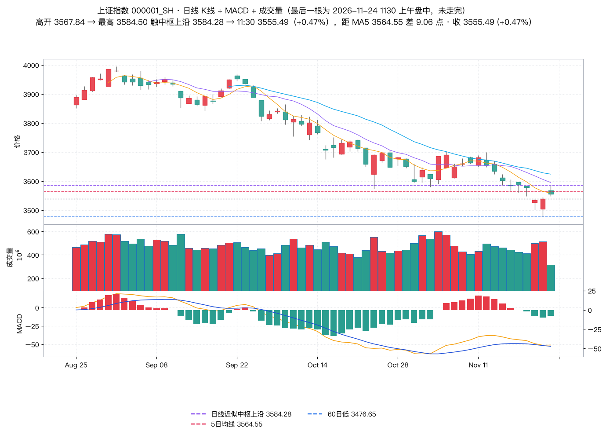
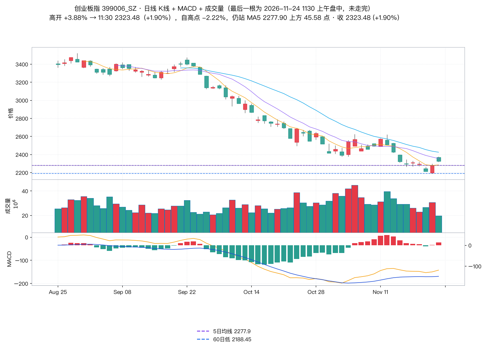
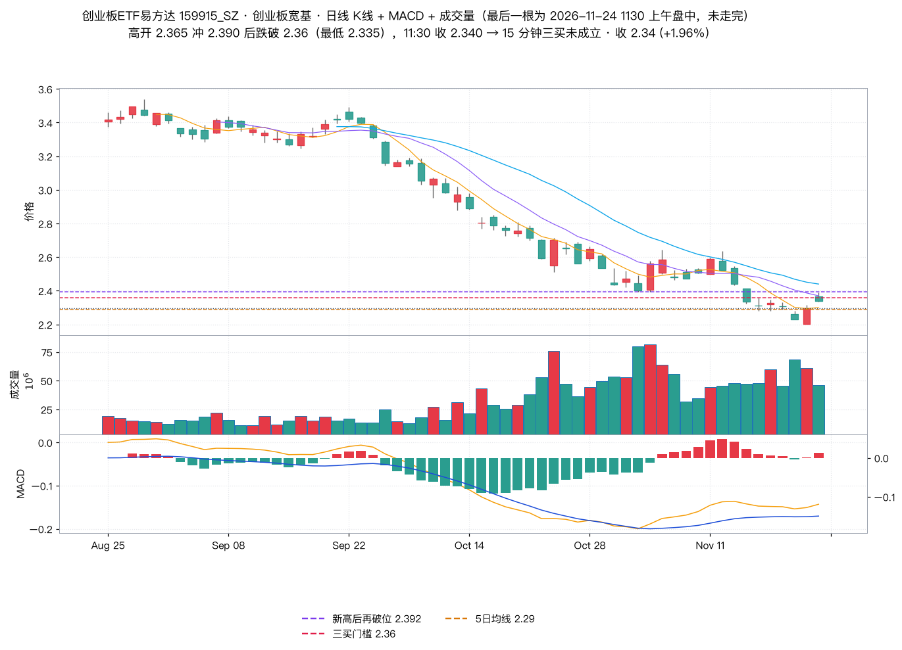

结论：中枢上沿触压回落，没有见底，维持轻仓、不追高。 11:30 上证 3555.49（+0.47%），早盘最高 3584.50 恰好触及日线近似中枢上沿 3584.28（超出 0.22 点）后回落，距 MA5 3564.55 还差 9.06 点。日线底分型形态成立（11/23 低 3476.65 为 60 日低），但幅度只 +2.26%，够不到今日上影线高点 3584.50 → 止跌三要件一条不满足。
① 「高开震荡走低」：上证开 3567.84（+0.82%）→ 高 3584.50 → 低 3547.50 → 11:30 收 3555.49（+0.47%），自高点 -0.81%；创业板指高开 +3.88% → 11:30 +1.90%（自高 -2.22%）。全天运行区间 3547.50–3584.50，几乎都贴着日线近似中枢 3560.45–3584.28（近 10/12/15/20 根日 K 口径一致）✓
② 「高开后恰好触及下跌中枢短期压力附近」：今日最高 3584.50，较中枢上沿 3584.28 超出 0.22 点，随即回落 —— 触压回落成立 ✓。「在中枢位置反复震荡」的定性也成立：上午全程贴着中枢上下沿窄幅运行。
③ 「日线底分型形态已经形成」：11/23 低点 3476.65（60 日新低），左右 11/20 低 3500.83、11/24 盘中低 3547.50 都更高 → 宽松三 K 底分型成立 ✓；但严格口径（中间 K 高点也须最低）不成立（11/23 高 3544.60 > 11/20 高 3538.27）→ 正好对应老师说的「力度不够」。
④ 「谨慎判断没有见底」 —— 止跌三要件逐条核：① 底分型形态成立但力度不足：低点起算到 11:30 只有 +2.26%，要站稳今日日 K 上影线高点 3584.50 需 +3.10%，还差 29.01 点；② 收盘站住 MA5 3564.55 —— 11:30 价 3555.49 差 9.06 点，且当日尚未收盘；③ 第三根日 K 过 3584.50 —— 未到。

上证指数：11:30 收 3555.49，最高 3584.50 触中枢上沿后回落，仍未站上 MA5

创业板指：11:30 收 2323.48，高开 +3.88% 回吐后仍站 MA5 2277.90 上方 45.58 点
11:30 两市成交 11209.6 亿（沪 5121.3 + 深 6088.3），昨同刻 9163.7 亿，+22.33%——比早盘 10:30 口径的 +35.95% 明显掉速：最后一小时只成交 2595 亿，比昨天同段的 2827 亿少 8.2%。昨日全天两市 15528.8 亿、昨同刻占 59.01%，同比例外推今日全天约 1.90 万亿（10:30 口径外推还是 2.11 万亿）→ 早评「2.2 万亿」的预估在午盘口径下需下修，量能跟不上是今天回落的重要原因。
| 方向 | 老师口径 | 11:30 实测 | 判定 |
|---|---|---|---|
| 国产算力 | 「昨日上二类热点，今日表现尚可，华胜天成涨停属强势股」 | 篮子 +3.26%（6 涨 1 跌）；华胜天成 18.32 +10.03% 封板 | 一致 |
| 传媒 / 机器人 | 「上午表现还比较强；但快速冲高后易回落，弱势环境不追高」 | 传媒 +3.13%（7/0，10:30 为 +4.03%）；机器人 +4.41%（8/9，10:30 为 +4.16%） | 部分成立 |
| 红利 | 「调整已在进行中，感兴趣耐心等回调机会」 | 高股息红利 -0.39%（3 涨 3 跌）、煤炭石油 -1.69%（0/5）→ 调整成立；但银行 +0.04%、保险 +1.38% 11:30 已转正 | 内部分化 |
| 热点节奏 | 「指数冲高回落，热点演变节奏会快，不建议追涨」 | 涨停 72→63、炸板 22→44、跌超 5% 10→19、涨超 5% 564→315（10:40→13:01）；昨涨停 145 只今日跌 8→14 只 | 一致 |
篮子为自建板块 11:30 均值；宽度为 13:01 新浪全市场快照
① 承接在退：算力/CPO 篮子从 10:30 的 +7.08% 回落到 +5.63%，元件/PCB 从 +4.99% 降到 +3.16%；中际旭创 11:30 434.80，自高点 468.34 回吐 -7.16%（早评时 6.26%）→ 兑现盘在加重。
② 宽度也在退：13:01 涨 2683 / 跌 2388（10:40 还是 4106/979），上午尾盘到午后开盘情绪明显回落。
③ 新方向线索：东财行业榜逆变器 +4.62%（10 只全涨）、文化用品 +6.71%（5 只）——钴 +11.51% 只有 2 只成分，不作强度依据。
| 标的 | 题材 | 11:30 | 老师口径 | 实测印证 | 动作 |
|---|---|---|---|---|---|
| 瑞芯微 603893 | 端侧AI | 211.60 +4.30% | 昨日大阳线不算买点，要等 2-3 天小级别横盘 | 今高 214.51 仍在向上延续，横盘尚未展开 | 等 |
| 海天瑞声 688787 | 机器人 | 105.00 +1.16% | 同上，先排除回落风险 | 自高 109.06 回吐 3.72%，最低 103.45 已破昨收 103.80 | 等 |
| 药明康德 603259 | 大医药 | 146.18 -0.25% | 走势简单，无方法买点 | 高开 +0.94% 后翻绿，自高 -1.53% | 等 |
| 中国船舶 600150 | 船舶 | 34.82 +1.52% | 走势简单，无方法买点 | 站上 MA5 34.44（+0.38 元） | 等 |
| 伊利股份 600887 | 大消费 | 33.05 +0.61% | 盯 31.95 得失，破则小级别顶背驰 | 今低 32.51，距 31.95 还有 0.56 元 → 未破，震荡延续 | 等 |
| 创业板ETF 159915 | 创业板宽基 | 2.340 +1.96% | 破 2.36 出三买；新高 2.392 后要再破 2.392 | 最低 2.335 已跌破 2.36（差 0.025）→ 三买未成立；距 2.392 还差 0.052 | 等突破 2.392 |
| 兆易创新 603986 | 存储芯片 | 218.18 +1.66% | 破 224.6 出三买；新高 229.5 后要再破 229.5 | 今高 229.00（快照 229.50），自高回吐 4.72%，两触发位均未到 | 等突破 229.5 |
| 华丰科技 688629 | 华为概念 | 91.73 +3.76% | 不建议操作，不够强 | 自高 95.60 回吐 4.05%，对比华胜天成封板明显弱 | 不操作 |
| 中芯国际 688981 | 国产算力 | 126.38 +3.93% | 走势尚可，结构向上延续，辅助日线顶分型回抽 | 站 MA5 119.57 上方 6.81 元，回吐仅 1.13%（池内最小） | 等 |
11:30 腾讯分时切片；「等」= 无方法买点，只等老师给的触发条件

创业板ETF易方达：上午高开 2.365 冲 2.390 后跌破 2.36，11:30 收 2.340，三买未成立
① 成交额：早评「2.2 万亿」→ 11:30 口径外推 1.90 万亿（最后一小时同比 -8.2%），属外推口径差异，预估需下修。
② 底分型：宽松三 K 口径成立，严格口径（中间 K 高点也最低）不成立 → 口径差异，与老师「力度不够」方向一致。
③ 红利：调整方向成立，但银行 +0.04%、保险 +1.38% 已转正，红利内部出现分化。
④ 传媒 / 机器人：两者 11:30 仍强，但昨日提示的「快速冲高后回落」只在传媒兑现（+4.03%→+3.13%），机器人反涨（+4.16%→+4.41%）→ 部分成立。
⑤ 宽度口径：涨跌家数取 13:01 下午开盘快照（上午 11:30 收盘值无法回溯），已在页面上标注时点。
其余判据当日一致 ✓：高开震荡走低、触及中枢压力、底分型形态形成、量能放大、算力回落、热点演变加快、池内无方法买点。
来源：都业华《高级班》2026-11-24 午盘（两点看盘），执业编号 A0400626100004。以上内容仅供参考，不作为买卖依据，据此操作风险自担。投资有风险，入市需谨慎。
口径：指数与个股点位为 11:30 腾讯分时切片（当日未收盘）；涨跌家数、涨跌停为 13:01 新浪全市场快照；两市成交额 = 沪 sh000001 + 深 sz399106 累计额；板块为自建篮子 11:30 均值；日线近似中枢按「相邻日 K 重叠区连续 ≥3 根有公共交集」计算；K 线图红涨绿跌，末根为 11:30 盘中未走完。
缠论定性（中枢、底分型、日线顶分型回抽、15 分钟三买）按老师口径引用，未做分钟级复算；老师本期未明示总仓上限，报告按其原话「仓位不宜过快提升、整体保持轻仓」引用。